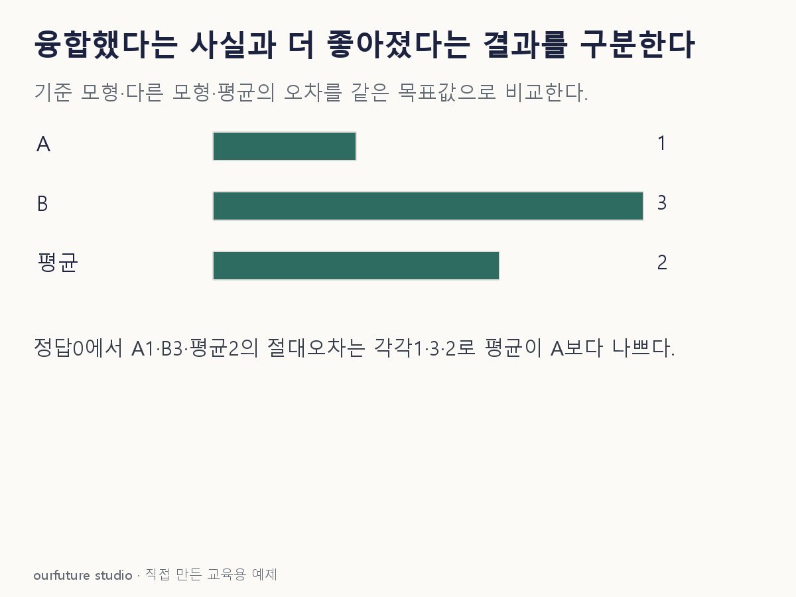

조건을 바꾸며 확인하기
한 자체 사례의 가중 평균 산술이다. 시험 정답으로 가중치를 튜닝하는 체험이나 실제 모델 성능 평가가 아니다.
설명 그림과 비교하기
아래 그림과 표는 고정된 설명 예제입니다. 기본·변형 중 어떤 조건인지 캡션을 읽고, 바꾼 입력의 결과는 계산 칸에서 확인하세요.

같은 문제를 직접 골라 보기
정답이 0인 같은 평가 사례에서 A의 예측 1과 B의 예측 3을 동일 가중치로 평균한다.
조건을 더 바꾸면?
B의 예측만−1로 바꾸고 정답 0·A의 예측 1·동일 가중치는 유지한다. 평균 융합의 절대오차는?
변형 풀이 확인
평균 예측 0, 절대오차 0이다.
이번에는 반대 방향의 오차가 상쇄된다. 개선의 가능성과 항상 개선된다는 주장은 다르며, 다른 사례에서도 상쇄되는지는 직접 평가해야 한다.
모형 개수 대신, 같은 표의 오차를 비교한다.